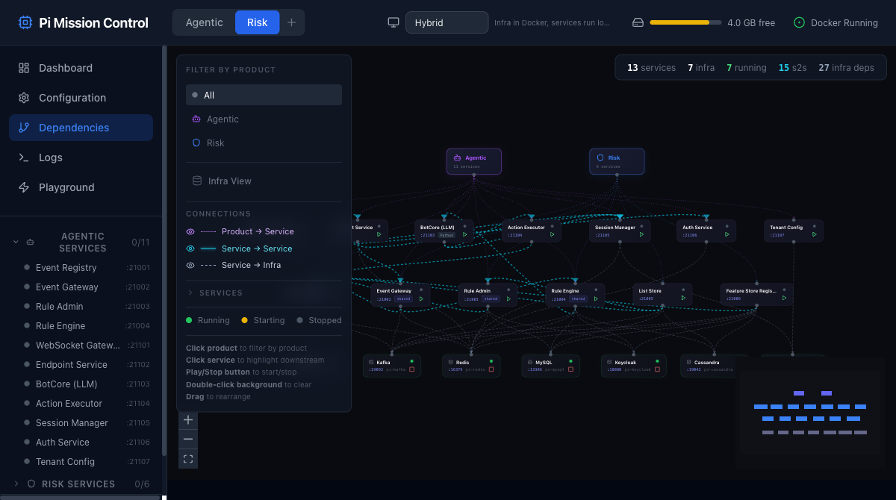
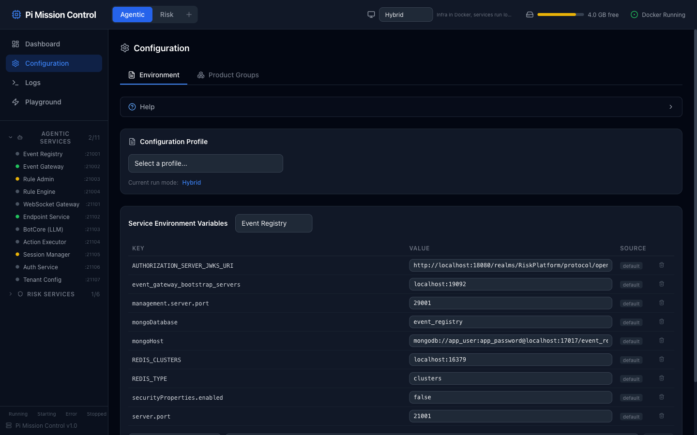
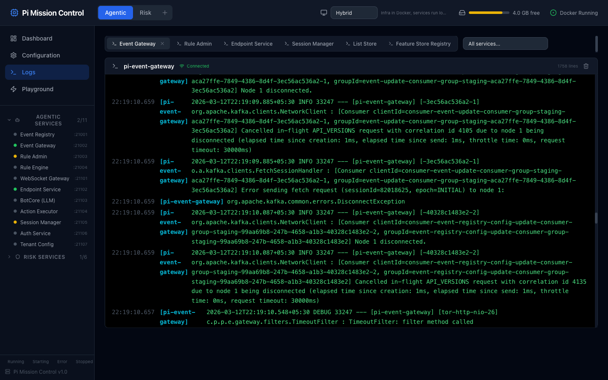
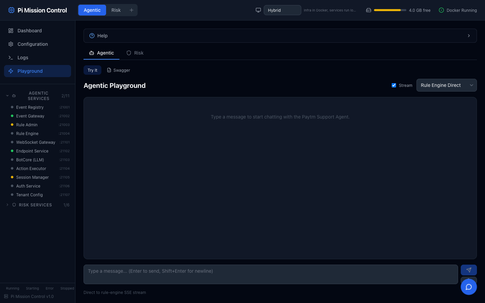
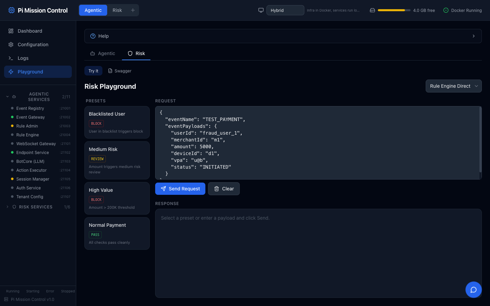

Zero-code extensibility: Adding a new product (Payments, Lending, Insurance) = one JSON file. All 6 AI skills work instantly.
MCP Server — The Integration Layer
The one MCP server that powers all 6 Dev Suite skills
🏢
Atlassian MCP
Used by all 6 skills — the backbone of the SDLC automation
Tool
Used By
getJiraIssue
/plan — fetch ticket details, ACs
addCommentToJiraIssue
/plan, /review, /pr — post updates
getConfluencePage
/coding, /local-test, /review, /pr
getConfluencePageDescendants
/init, /plan — find product pages
createConfluencePage
/init, /plan — create new pages
updateConfluencePage
All 6 — update status on every step
Why Only One MCP?
Everything else is handled natively:
Git/Bitbucket — Claude Code's built-in git + SSH
Docker — Dev Suite server REST API
Service orchestration — Dev Suite server API
MySQL — direct CLI from Claude Code's Bash
Build/Test — gradle, maven, pytest via Bash
Code changes — Claude Code's native Read/Write/Edit
One-time setup: Add the Atlassian MCP to Claude Code's settings.json. That's it — all 6 skills work immediately. No other external MCP dependencies.
Interactive Dependency Graph
Full service topology with live start/stop controls, product filtering, and downstream highlighting

13 Services across 2 products
7 Infrastructure with live status
15 S2S + 27 Infra dependency edges
Start/Stop per node
6 Claude Code Skills
Custom slash commands that ship with Dev Suite. Each automates a complete workflow step.
1
/init
Architecture knowledge base
→
2
/plan
Jira → Confluence plan
→
3
/coding
Code + tests + format
→
4
/local-test
E2E verification
→
5
/review
AI code review
→
6
/pr
Ship to Bitbucket
/initONE-TIME
Deep-scans all repos, reads CLAUDE.md + source code, generates architecture knowledge base. Publishes to Confluence. ~30-40 min on developer laptop.
/planCLARITY GATE
Reads Jira, checks clarity. If unclear — asks dev, posts Jira comment. BLOCKS until clarified. Then creates Confluence plan with architecture diagrams.
/codingONE-SHOT
Reads Confluence plan, creates branches, writes code + mandatory unit tests + formatter. Blocks if tests fail. Updates Confluence status.
/local-testGUIDED
Starts infra + services via DevSuite API. Generates test plan, presents to dev for approval. Executes step-by-step. Sensitive data masked via env vars.
/reviewAI REVIEW
Security analysis, thread safety, test coverage, API compatibility. Done by Claude Code for now — model can be swapped in future.
/prSHIP IT
Commits, pushes branches, creates PRs on Bitbucket. Cross-links Jira, Confluence, and PRs. Full audit trail.
/init — Architecture Knowledge Base
One-time per product. ~30-40 min. The foundation everything else builds on.
How Foundry Helps Here
Our repos are already integrated with Foundry (Claude Code). Each repo has a CLAUDE.md file — a structured document that tells the AI agent:
What this service does and its architecture
How to build, test, and run it
Key APIs, configs, env vars, and gotchas
Inter-service dependencies and communication patterns
/init reads these CLAUDE.md files across all repos, merges them with deep code analysis, and produces a unified architecture document — the foundation for everything else.
Step 1
Read CLAUDE.md Files
Workspace-level + per-repo CLAUDE.md. Falls back to deep code scan if missing.
Step 2
Merge & Analyze
Combines CLAUDE.md knowledge with actual source analysis — controllers, DTOs, configs.
Step 3
Generate & Publish
Creates architecture doc + setup guide. Publishes to Confluence for the team.
What Gets Generated
The unified architecture doc contains:
Every service — port, Java version, framework, dependencies
All API endpoints across all repos
Inter-service communication patterns
Database schemas and environment variable maps
SDK dependency chain and build order
Known issues and gotchas
"My understanding of how repos work is based on this dependency map." Every subsequent skill reads this to know what to change and where.
Because of Foundry: With CLAUDE.md files already in every repo, /init is fast and accurate. Without them, it would need to do expensive deep code scanning for every repo from scratch.
The Website
Full project management, service orchestration, and testing — all at localhost:3456

Configuration — per-service env vars, profiles, run modes

Logs — real-time WebSocket streaming from all services

Agentic Playground — chat with LLM agents, SSE streaming

Risk Playground — test fraud rules with presets (BLOCK/REVIEW/PASS)
Because of Foundry (Claude Code), Dev Suite can do things by itself — start services, run tests, diagnose failures, and fix code without manual intervention. The dashboard + AI agent work in tandem.
Powered by Claude Code
Skills run inside Claude Code CLI — Anthropic's terminal-native AI agent
Skills are Markdown instruction files in .claude/commands/devsuite/
They ship with the repo — any developer who clones dev-suite gets all 6 skills automatically.
Is it Dev Ready?
The /plan skill has a Clarity Gate — it refuses to plan ambiguous tickets
When Requirements Are Unclear
1. Agent reads Jira ticket
Checks: Is expected behavior defined? Are ACs testable? Is scope clear?
2. BLOCKS — asks developer first
"This ticket is missing X, Y, Z. Can you clarify?"
3. If dev doesn't know — posts on Jira
Posts a structured comment with specific questions for the product team.
4. STOPS — no plan created
Prevents wasted implementation effort. Re-run /plan after answers.
EXAMPLE — UNCLEAR JIRA TICKET
PAI-XXXXX: Improve agent response qualityDescription: The agent responses are not
good enough. Make them better.
AC: Responses should be improved.
Agent's Jira Comment:
DevSuite Cloud Agent needs clarification:1. What specific quality metrics?
2. Which agent/persona is affected?
3. Change prompt, model, or tool config?
4. How should we measure "improved"?
Re-run:/devsuite:plan agentic PAI-XXXXX
LIVE DEMO — PAI-29180
/plan → Confluence
Real Jira ticket: "Action Output Persistence in Event Payload" — Agentic product
🎫JIRA PAI-29180
Agent-triggered action outputs lost after execution. Chained actions can't access prior outputs.
Status
To Be Picked
Repos
pi-botcore + pi-rule-engine
ACs
7 acceptance criteria
📝CONFLUENCE — AUTO-GENERATED
Ticket summary + acceptance criteria
Affected repos table with risk levels
Mermaid sequence diagram (RE ↔ BE ↔ AE ↔ SM)
Per-repo file-level change list (16 files)
API schema diffs (streaming + non-streaming)
E2E test scenario with expected results
5 risks with mitigations + rollback plan
Deployment order
The plan lives on Confluence — not in the agent's memory. Developers can review, edit, share with the team, or have a senior engineer validate. The agent reads the latest version when /coding runs.
LIVE DEMO — PAI-29180
/coding — One-Shot Execution
Code + test cases + execution — all mandatory steps from the plan
pi-botcore (Python)
PASSED
Files Modified
10
Tests Written
4 files · 11 new tests
Tests Passing
55/56
Formatter
ruff applied ✓
pi-rule-engine (Java)
INFRA ISSUE
Files Modified
6
Tests Written
4 test files
Compilation
CodeArtifact 401
Mandatory Steps (enforced)
Load plan from Confluence BLOCKS
Create feature branches per repo
Implement changes per plan's file list
Write unit testsNOT OPTIONAL
Run formatter (Spotless / ruff)
Verify compilation
Tests must passBLOCKS
Update Confluence: Planned → Coded
LIVE DEMO — PAI-29180
/local-test — E2E Verification
#
Test
Result
1
pi-botcore non-streaming event_payload
PASS
2
pi-botcore streaming event_payload
PASS
3
Rule Engine non-streaming passthrough
PASS
4
Rule Engine streaming passthrough
PASS
5
Full LLM chain (GPT-4o)
PASS
6
Endpoint-service session creation
PASS
7
Endpoint-service full chain
FAIL
8
WebSocket gateway chain
SKIP
AI Bug Discovery: Step 7 revealed a pre-existing API contract mismatch between pi-endpoint-service and pi-rule-engine — unrelated to PAI-29180. The agent found a real bug.
🔒 Sensitive Data Handling
Test payloads use env var references, never real credentials:
The DevSuite server substitutes actual values at execution time from the developer's local environment. Logs are filtered — no credential leaks.
Guided Approach:Agent generates test plan → presents to developer → dev approves/edits/skips → then executes.
LIVE DEMO — PAI-29180
/review — AI Code Review
Done by Claude Code for now. In future, we can swap the model or add specialized review agents.
#
Finding
Severity
1
Broken verify() — missing 11th any() param
HIGH
2
Thread-unsafe HashMap in reactive flatMap
HIGH
3
No tests for non-null eventPayload flow
HIGH
4
putAll() can overwrite system keys
MED
5
No call_tools() merge edge case tests
MED
6
No size validation on event_payload
MED
7
Shallow merge overwrites nested dicts
MED
Review Capabilities
Security — no hardcoded secrets, injection risks, input validation
Thread Safety — concurrent data structures in reactive code
Test Coverage — happy path, edge cases, JaCoCo thresholds
API Compatibility — backward compatible, optional fields
Cross-Service — DTO field names match, SSE format consistent
Model flexibility: The review framework is model-agnostic. We can plug in GPT-4o, Gemini, or a specialized security review agent while keeping the same skill framework and Confluence output format.
Full Traceability
Every step documented on Confluence. Single source of truth for the entire team.
🎫 Jira PAI-29180→📝 Confluence Plan→🔀 Feature Branches→🧪 Test Results→🔍 Code Review→🚀 PRs on Bitbucket
Planned→Coded→Tested→Review Ready→PR Created ✓
Confluence Section
Generated By
Content
Ticket Summary
/plan
Problem statement + ACs from Jira
Architecture Diagram
/plan
Mermaid sequence diagram — RE ↔ BE ↔ AE ↔ SM
Implementation Plan
/plan
16 files across 2 repos, API schema diffs
Implementation Notes
/coding
Actual files changed, deviations from plan
Test Results
/local-test
8 steps: 6 passed, 1 failed, 1 skipped
Code Review
/review
10 findings (3 High, 4 Medium, 3 Low)
Pull Requests
/pr
Links to both Bitbucket PRs
Business Impact
90%
Setup Time Reduced
Hours → one click
5x
Faster Planning
Days → minutes
100%
Audit Trail
Zero documentation gaps
Multi-Repo Atomic
14 repos as one coordinated change
AI Quality Gate
Security + thread-safety before human review
Week-1 Onboarding
New engineers productive in days
From CI to CD
Everything shown so far is the CI side. Here's what we're building for CD.
CI (Dev Suite)
/plan → /coding → /local-test → /review → /pr
→
FEATURE
PR merged
→
DEV
Auto-deploy + test
→
PRODUCTION
Canary → full rollout
CI — What We Showed Today
/plan — Jira → Confluence architecture plan
/coding — Multi-repo code + mandatory tests
/local-test — E2E verification with service orchestration
/review — AI security + quality review
/pr — Create PRs on Bitbucket with full traceability
CD — What We're Building
BUILDING
Single Promotion Pipeline — unified path: Feature → Dev → Prod with automated testing at every stage